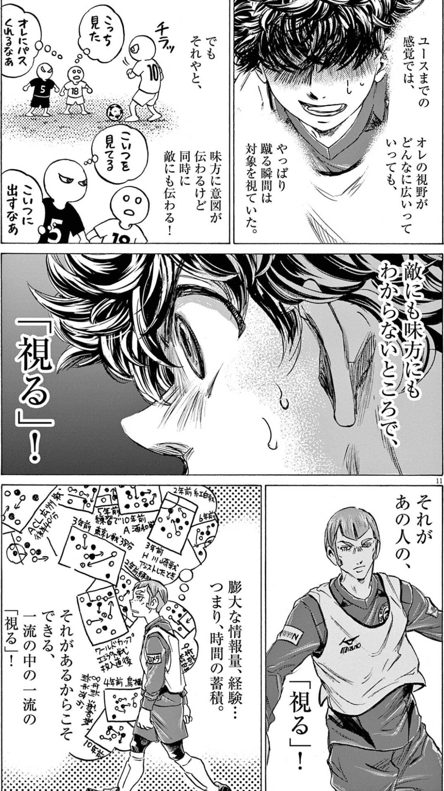
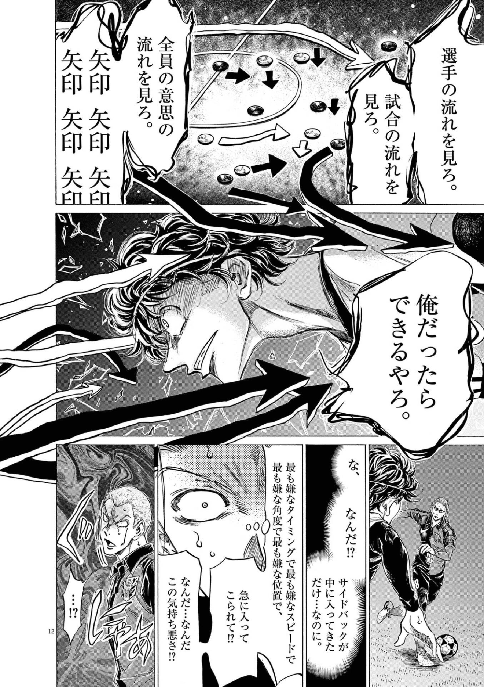
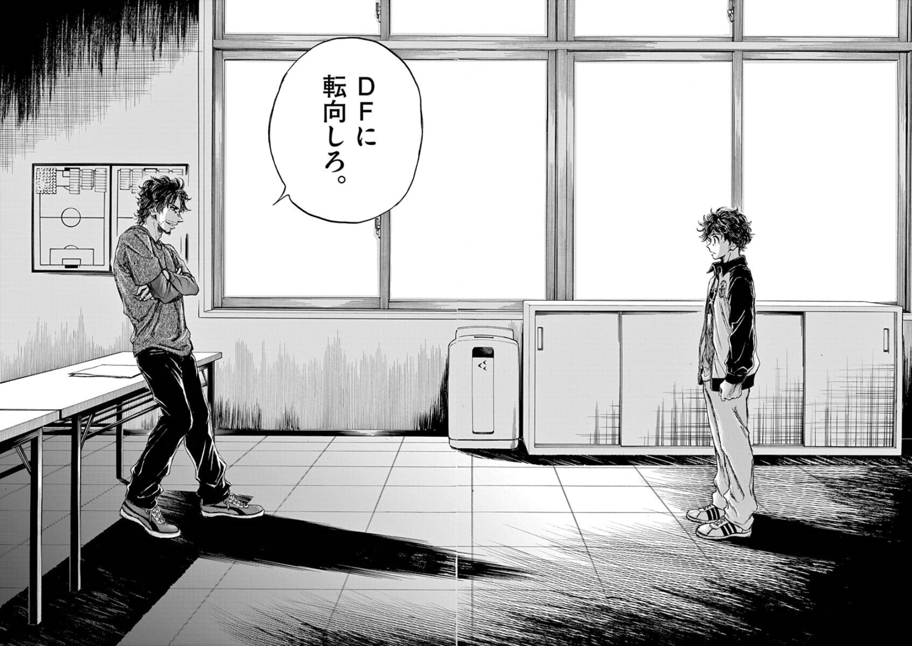
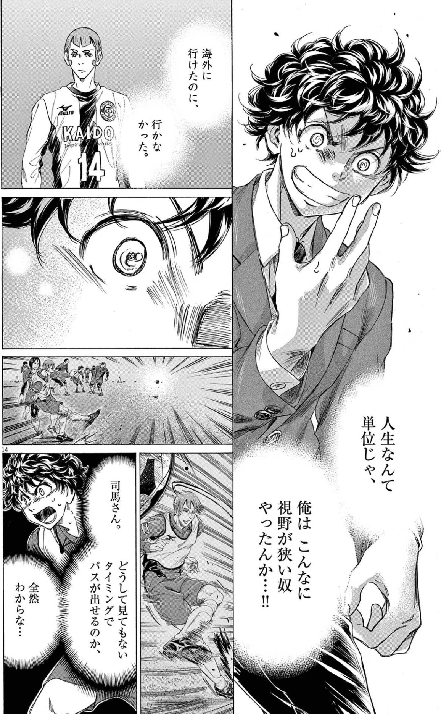

読書ログ #4 —— アオアシ × センスの哲学
意味からリズムへ。俯瞰は、最初から持っていた才能ではなく、育っていく知覚だったのかもしれない。
1. アオアシは、視野の物語だ
小林有吾『アオアシ』は、サッカー漫画の形をした、知覚の物語だと思っている。
愛媛から出てきた青井葦人(アシト)は、ゴールに飢えたフォワードだ。点を取りたい。前へ行きたい。ボールを呼び込んで、ネットを揺らしたい。少年の熱は、まっすぐ前を向いている。
その彼を、Jユースの監督・福田が拾う。福田が見ていたのは、アシトの得点能力ではなかった。ピッチを、上から見ているような視野。本人も気づいていない、空間そのものを捉える知覚のほうだった。
この漫画がずっと描いているのは、たぶん「うまくなる」話ではない。見え方が変わる話だ。同じピッチ、同じ22人、同じボール。なのに、ある日からアシトには、まったく違うものが見え始める。

2. センスの哲学：意味から、リズムへ
ここに、千葉雅也『センスの哲学』を並べたい。
「センスがいい」「センスが悪い」——僕らはこの言葉を、生まれつきの才能みたいに使う。あの人はセンスがある、自分にはない。そういう諦めの言葉として。
千葉は、そこを静かにほどいていく。センスは、神に選ばれた一部の人の持ち物ではない。細部を知覚する力であって、育てられる。では、何を育てるのか。本の中心にある転回が、これだ。
ものを、意味ではなく、リズムとして捉える。
僕らはふだん、目の前のものを「これは何を意味するか」で受け取っている。この絵は何を伝えたいのか。この料理は何のためか。この一手は、どういう作戦か。意味——メッセージ、目的、物語。それで世界を要約してしまう。
センスの入口は、その要約をいったん留保することにある。意味の手前で、強弱・配置・間・運動を感じ取る。千葉はそれをリズムと呼ぶ。良し悪しを判定する前に、ものがそこでどう動いているかを、ただ視る。
3. アシトに、何が見え始めたのか
アシトの最初の視界は、意味でできていた。
ボールは「点を取るための対象」。スペースは「自分が抜け出す場所」。味方は「パスをくれる相手」。すべてが、ゴールという意味へ向かって整理されている。前のめりで、狭い。点を取る物語の主役として、ピッチを見ている。
福田が開かせるのは、その手前だ。ボールを意味から引き剥がして、ピッチ全体の配置と流れとして視る。誰がどこにいて、どの空間が空いていて、相手の重心がどちらへ傾いているか。点という一点ではなく、22人がつくる運動そのもの。

これは、千葉の言う「意味からリズムへ」の転回と、ほとんど同じことが起きている。アシトの俯瞰は、ゴール(意味)で世界を要約するのをやめて、配置(リズム)として視る知覚なのだと思う。
そして大事なのは、それが最初から完成した才能ではないことだ。素質はある。けれどアオアシが何巻もかけて描くのは、その知覚が問いと反復で少しずつ育っていく過程のほうだ。センスは天与ではなく、育つ。漫画と哲学書が、同じことを別の言葉で言っている。
4. ポジション変更という、残酷な置き直し
物語の序盤、福田はアシトに、残酷な宣告をする。
フォワードをやめろ。お前は、ディフェンダーをやれ。

点を取りたくてここまで来た少年に、「お前は守る側だ」と言う。夢の真ん中にあった「点を取る物語」を、いったん手から取り上げてしまう。アシトは荒れる。当然だ。意味を奪われたのだから。
けれど福田には見えていた。アシトの俯瞰は、最前線で点を待つより、後ろから全体を視る位置でこそ生きる。前を向いて突っ込む知覚ではなく、ピッチを背後から畳むように視る知覚。だからこそ、あえて後ろへ置いた。
これは、センスの哲学の核心と重なる。いったん意味を引き剥がして、リズムとして置き直す。「点を取る主役」という意味づけを外したとき、はじめてアシトの知覚は本来の射程で動き始める。配置を奪うのではなく、配置を変えることで、見え方そのものが変わる。
残酷なのは、その瞬間には本人にリズムが視えていないからだ。意味を取り上げられた痛みだけが先に来る。置き直しの意味は、あとからしか分からない。
5. 福田監督は、思想者型と哲学者型を、行き来する
アオアシをリーダー論として読むと、福田の振る舞いが面白い。彼は、二つの異なる態度を使い分けている。
ひとつは、思想者型。答えを教えない。問いだけを置く。「なぜ、そこに走った?」「今、何が視えていた?」——正解を差し出す代わりに、選手が自分で気づくための余白を残す。気づきは、他人に与えられない。視え方は、本人の中でしか変わらない。だから福田は、しばしば黙って待つ。
もうひとつは、哲学者型。ポジション変更のような決定は、問いかけでは渡さない。断定で言い渡す。お前はディフェンダーをやれ、と。そこには彼の理想とするチーム像——全員が考え、ピッチ全体が一つの知覚として動くサッカー——への、譲らない意志がある。概念を定義し、決断する側の顔だ。
この二つは、どちらかが正しいのではない。問いかけだけの指導者は、構造を立てられない。やさしく見えて、決定から逃げているだけのことがある。一方、断定だけの指導者は、気づきを殺す。選手は従うが、視え方は変わらない。福田が選手を育てられるのは、この二つを、場面で行き来できるからだ。
普段は問いを置いて気づきを待ち、構造の要所では残酷なほど断定する。思想者型を基本線に、哲学者型を必要な一点に絞る。このバランスそのものが、たぶん指導という営みの本体なのだと思う。
6. なぜ、行き来が要るのか
このバランスは、指導の話に留まらない。
問いかけだけの場は、心地よい。誰も傷つかない。けれど、誰も「お前はディフェンダーをやれ」を言わないチームは、いつまでも意味の置き直しが起きない。各自が好きな意味にしがみついたまま、全体のリズムは立ち上がらない。やさしさが、構造の不在を覆い隠す。
断定だけの場は、速い。決まる。けれど、気づきの余白がない場では、選手は理由を理解しないまま動く。視え方は変わらないから、監督がいなくなった瞬間に崩れる。従属は、自律ではない。
だから、行き来が要る。構造は断定でしか立たないが、知覚は問いでしか育たない。福田は、そのどちらも手放さない。理想を譲らない強さと、答えを急がない辛抱を、同じ人間が両方持っている。
これは、文章にも、組織にも、そのまま効いてくる気がする。断定が要る場所と、問いを残す場所を、取り違えないこと。
7. センスは、民主化できる
千葉の本がやさしいのは、最後に「だからセンスは育てられる」へ着地するところだ。
センスは、生まれの才能ではない。階級でも、血筋でもない。細部を知覚し、リズムを視る習慣の蓄積だ。だから、誰でも育てられる。これは、このシリーズの #0 で置いた「漫画は文化資本の民主化装置だった」と、同じ場所に着く。
アシトの俯瞰も、結局そうだ。天才の一発芸として描かれない。問いを受け、走り、間違え、また視る。その反復で、知覚が少しずつ広がっていく。才能の物語ではなく、知覚が育つ物語だからこそ、読んでいる僕らの側にも、何かが少し変わる余地が残る。

見え方は、変えられる。これは、けっこう希望のある話だと思う。
8. 観測も、ひとつのセンスだ
最後に、OrbitLens に繋げたい。
エンジニアの仕事を、コミット一つひとつの意味で読もうとすると、視界はアシトの最初の状態になる。この PR は何をしたか、この行は何のためか。点としての貢献を、一つずつ数える。前のめりで、狭い。
EIS がやろうとしているのは、その手前だ。個々のコミットの意味を集計するのではなく、配置と軌道——リズムとして視る。誰がどのモジュールを支えていて、どの知識が時間に耐えて生き残り、どこに変更圧が溜まっているか。点ではなく、組織全体がつくる運動そのもの。これは、アシトの俯瞰と同じ知覚の話だと思っている。
そして観測者の態度も、福田と同じ問いに立つ。「この人はスコアが低い」と断定するのは、哲学者型の顔だ——それだけだと、人を一点に固定して、気づきを殺す。Signals, not Scores は、そこを基本線で思想者型に置く設計だと思う。点で序列を確定するのではなく、「この軌道、いま何が起きている?」と問いを残す。福田がアシトに、答えではなく問いを置いたように。
ただし、思想者型だけでは構造が立たない。7軸も、アーキタイプも、ある時点では断定で名付けるしかない。これは「お前はディフェンダーをやれ」の残酷さに近い。構造を名付ける勇気がなければ、観測はやさしいだけのノイズになる。
だから観測も、行き来だ。配置をリズムとして視る知覚(センス)を基本に、構造の要所だけ断定で名付ける。望遠鏡が問いを残し、必要な一点で構造を指す。そのバランスが崩れた瞬間、観測は順位表に堕ちる。
見え方は、育てられる。点を数えるのをやめて、リズムを視ることから。
俯瞰は、選ばれた者の才能ではなかった。観測も、たぶん同じだ。
取り上げた本
次回予告
ここから数回は、アオアシをさらに深く読む連作になる。次回 #5 は「見出す者と、乗っ取る者」——才能は、見出されるのを待つしかないのか。それとも、見出させることもできるのか。ジェームズ・C・スコット『国家のように見る』と、ブルデュー『ディスタンクシオン』と並べて読む。
本記事は小林有吾『アオアシ』、および千葉雅也『センスの哲学』への個人的な考察です。
OrbitLens / machuz